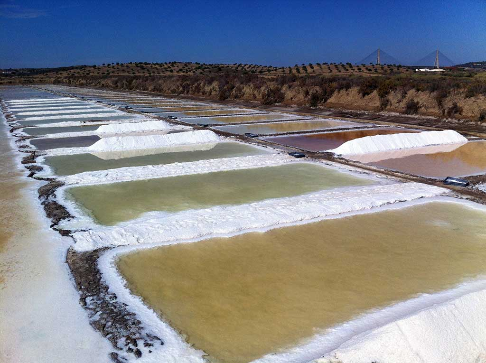
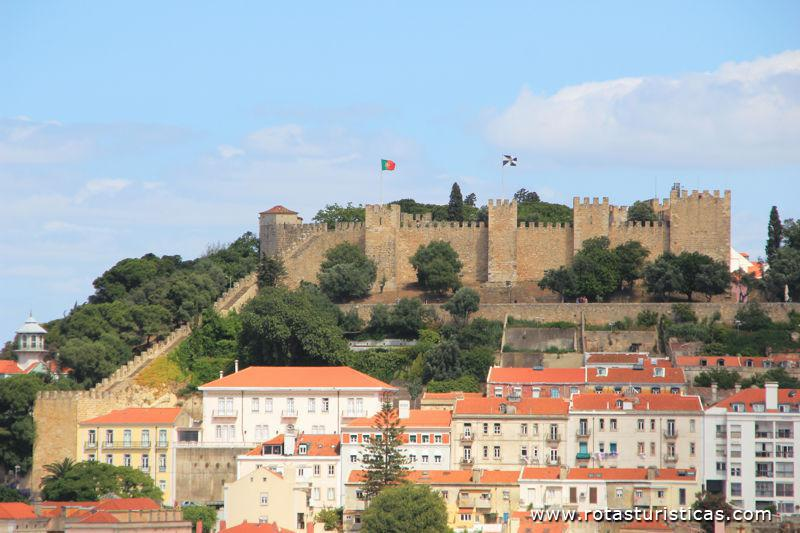
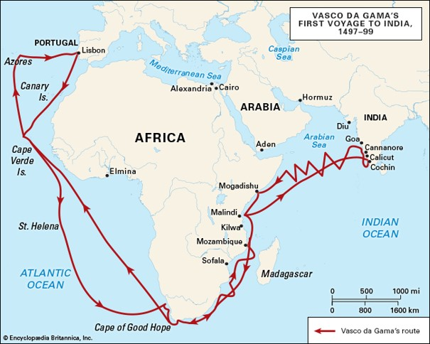

Het estuarium van Taag
Wat is een estuarium?
Een estuarium is een ondergelopen riviermonding, waarbij het water een groot stuk landinwaarts kan stromen met behulp van een sterke getijdestroming. Steden en dorpen die in de buurt van een estuarium liggen, zijn vaak gevestigd op hoge plekken om het relatief grote hoogteverschil tussen eb en vloed te vermijden. De landbouw ligt daarentegen vaak een stuk lager in het landschap.
Doordat de monding van een estuarium aan zee ligt, zijn er onder andere mariene sedimenten te vinden. Vaak is de hoeveelheid sediment in estuaria relatief weinig omdat de sterke getijdestroming voorkomt dat er ronddrijvende deeltjes op de bodem neerdalen. Daarnaast is er vaak een interessant en divers ecosysteem, wat wordt veroorzaakt door het brakke water. Verder landinwaarts zijn er meer rivier gedomineerde processen zoals de sedimentatie van klei en zand. Ook zijn er minder golven en is het water zoet, wat ervoor zorgt dat hier een ander ecosysteem kan zijn dan in de monding.
Het naast Lissabon gelegen estuarium van Taag is een brede, trechtervormige monding van de duizend kilometer lange rivier de Taag. Bij de monding wordt zoet rivierwater en zout zeewater vermengd waardoor er brak water ontstaat. Ook is getijdeverschil een waarneembaar kenmerk van dit estuarium. Bij het estuarium van Taag kun je spreken van een hoog en een laag gedeelte. Het lage gedeelte bestaat uit de monding en het hogere gedeelte ligt meer landinwaarts.
Het bijzondere aan het estuarium van Taag is dat het zich volledig in de luwte van het omliggende land bevindt. Desondanks is het getijdeverschil toch vrij groot. Soms is het verschil tussen eb en vloed zelfs meer dan 4 meter. Het gemiddelde ligt tussen 2 tot 4 meter, dus dan spreek je van meso getijde. Een getijdeverschil van minder dan 2 meter noem je micro getijde en een getijdeverschil van meer dan 4 meter heet macro getijde. De ligging van het estuarium is aantrekkelijk voor de marine en maar ook voor ontdekkingsreizigers. Zo is Columbus vanuit dit estuarium weggevaren. Al met al is het dus een bijzonder gebied met een rijke historie.
Stedelijk gebied
Het urbane gebied, wat voor het grootste deel boven zeeniveau ligt, heeft een oppervlakte van 507 km2. Het gebied bestaat uit veertien gemeenten met in totaal 2.8 miljoen inwoners. Het is vrij dichtbevolkt met maar liefst 5522 inwoners per vierkante kilometer. Het industriële gebied van het estuarium bestaat uit twee delen. Het ene deel is geconcentreerd langs de Lissabon en het andere deel is de grote haven. Langs de kust van het estuarium vindt vrij veel sedimentatie plaats. Dus om de haven open te houden moet er constant gebaggerd worden. Dit is noodzakelijk, want Lissabon bevat een van de grootste industriële havens van de gehele atlantische kust van Europa. Ook is het gebied verbonden met twee grote nationale snelwegen, wat zorgt voor een sterke handelspositie.
Het estuarium van Taag is een economisch ontwikkeld gebied en het heeft zeer veel gebruiksfuncties, zoals:
- Zware industrie
- Militair transport over water
- Urbaan
- Recreatie
- Transport
- Visserij
- Zoutwinning (zoals in de foto hiernaast te zien is)
Klimaat
Het estuarium van Taag bevindt zich in een vochtig klimaat met milde winters en hete zomers. Jaarlijks valt er 774 mm aan neerslag waarvan het meeste in de winter valt. De gemiddelde temperatuur varieert van 8 °C in de winter tot 29 °C in de zomer.
Waterkwaliteit
Waterkwaliteit is tegenwoordig een belangrijk aandachtspunt, en zo ook voor het estuarium van Taag. Lang heeft men in dit gebied lak gehad aan de waterkwaliteit. Zo werd er jarenlang rioolwater in het estuarium gedumpt. Gelukkig is dit sinds 2011 niet meer toegestaan en is 25% van het gebied sinds kort ook beschermd. Toch heeft de waterkwaliteit van het estuarium zeker nog wel aandacht nodig. Maar doordat er veel verschillende partijen bij betrokken zijn (zie vele gebruiksfuncties), is het lastig om grootscheepse plannen door te zetten. Het ontwerpen en inzetten van een integraal systeem voor planning en management zou hiervoor de oplossing zijn. Maar dit is helaas makkelijker gezegd dan gedaan.
Geschiedenis van Lissabon
In eerste instantie zijn de Grieken rond 1200 v.Chr. naar het estuarium van Taag getrokken omdat het een aantrekkelijk gebied was wat veel te bieden had. Volgens de legende is de stad Lissabon door de Griekse held Odysseus gesticht tijdens zijn lange tocht naar huis, de Odyssee. Rond 200 v.Chr. is de stad veroverd door de Romeinen. Maar toen het Romeinse Rijk uiteenviel is de stad in verval geraakt doordat het werd overgenomen door lokale volkeren uit het noorden. Rond het jaar 714 zijn de moslims de stad binnen gevallen. Hierdoor raakte de stad weer in bloei en werd het een machtig handelscentrum.
Een paar honderd jaar later in 1147, veroverde Koning Alfons I van Portugal Lissabon. De belegering heeft in totaal 17 weken geduurd, waarna de Moslim uiteindelijk de stad overgaven door honger. Na een bloedige overwinning van de stad heeft Alfons een bestaand fort op een heuvel laten ombouwen tot koninklijk paleis, het zogeheten Castelo de São Jorge zoals hiernaast in de foto te zien is. Doordat de Christenen aan de macht waren heeft de stad zich sterk ontwikkeld, zowel economisch als cultureel. Zo is de stad in 1255 als hoofdstad benoemd en in 1290 is de eerste Universiteit van Lissabon gesticht. Later rond 1500, is door de ontdekking van de zeeweg naar indië door Vasco da Gama, de Portugese Gouden Eeuw begonnen. Door de unieke handelspositie van Lissabon is de stad uitgegroeid tot wat het nu is.
Hiernaast is de ontdekte zeeweg naar indië te zien.